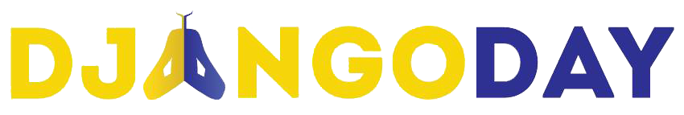

Um dia inteiro de palestras e minicursos sobre uma das plataformas de programação que mais cresce no mundo
26 de outubro de 2013 • 8h30 às 19h • Neoworking
Faça sua inscrição26 de outubro de 2013 • 8h30 às 19h • Neoworking
Faça sua inscriçãoPyCursos (PE)
Apresentamos Python e os 10 motivos pelo qual devemos conhece-la. Mercado, integrações, ferramentas, quem usa e principais dúvidas serão sanadas nesta palestra. Python é uma das plataformas livres que mais crescem no mundo. Por ser altamente produtiva e facil de aprender, é utilizada em startups, empresas e instituições de ensino.
Neste workshop passaremos pelas funcionalidades básicas e avançadas de Python e pelos diversos paradigmas (procedural, orientado a objetos e funcional). O participante sairá com uma base para construir seus primeiros programas a partir deste mini-curso. Público-alvo: Iniciantes
JusBrasil (BA)
Nessa apresentação procuro mostrar um case de sucesso que aconteceu na empresa JusBrasil. A empresa empregava Java em todos os projetos, e resolvemos mudar camada Web para Python, para agilizar o desenvolvimento e dar mais legibilidade ao código. Os resultados obtidos foram excelentes, e fazem parte da nossa nova plataforma. Mostrarei os critérios utilizados para escolha da tecnologia Flask e como foi usado no projeto.

Popcode (SE)
| 08:00 | Recepção e credenciamento | |
| 08:30 | Palestra: Python, a pílula azul da programação | Marcel Caraciolo |
| 09:30 | Palestra: Por quê o JusBrasil mudou para Python? | Osvaldo Matos Jr. |
| 10:30 | Coffee break | |
| 11:00 | Palestra: (a definir) | Matheus Lima |
| 12:00 | Almoço | |
| 13:00 | Minicurso: Python | Marcel Caraciolo |
| Minicurso: Django | Matheus Lima | |
| 15:30 | Coffee break | |
| 16:00 | Minicurso: Python | Marcel Caraciolo |
| Minicurso: Django | Matheus Lima | |
| 19:00 | Encerramento |
Os minicursos ocorrerão simultaneamente, escolha apenas um. Os participantes devem levar notebook próprio.

Rua Edson Ribeiro, 552 - Salgado Filho, Aracaju - SE